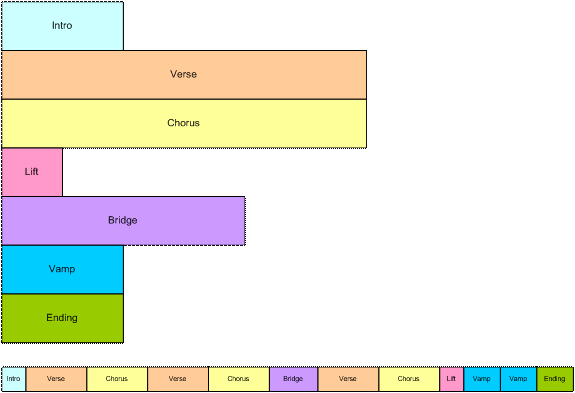
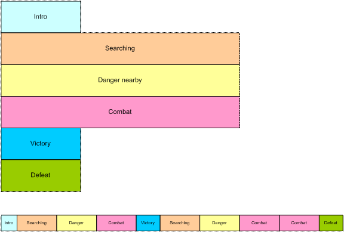
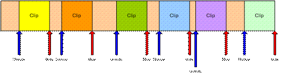
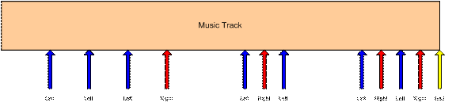
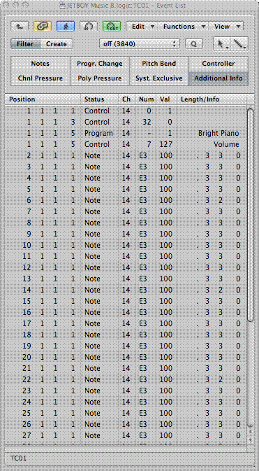

Copyright (C) 2009 The Android Open Source Project
Licensed under the Apache License, Version 2.0 (the "License");
you may not use this file except in compliance with the License.
You may obtain a copy of the License at
http://www.apache.org/licenses/LICENSE-2.0
Unless required by applicable law or agreed to in writing, software
distributed under the License is distributed on an "AS IS" BASIS,
WITHOUT WARRANTIES OR CONDITIONS OF ANY KIND, either express or implied.
See the License for the specific language governing permissions and
limitations under the License.
JET™ Content Authoring Guidelines
Vrs 1.0
Authored by SONiVOX
Copyright 2009 Sonic Network, Inc.
This document contains content creation
guidelines for composers and sound designers authoring music and sound effects
for the SONiVOX JET platform. JET is an
interactive music player for small embedded devices, including the Google Android
platform. It allows applications to include interactive music soundtracks, in
JET works in conjunction with SONiVOX’s
Embedded Audio Synthesizer (EAS) which is the
The JET content author works in up to three
different applications to create JET content; a standard
The final result is a .jet file that the content author gives to the application programmer for use in the game or application.
It is important to use a common set of
terms to minimize confusion. Since JET uses
Channel: MIDI data associated with a specific
Controller: A
DAW: Digital Audio Workstation. A common term for
EAS: Embedded
JET: Jet Interactive Engine. The name of the SONiVOX JET interactive music engine.
Segment: A musical section such as a chorus or verse that is a component of
the overall composition. In JET, a segment can be an entire MIDI file or a
derived from a portion of a
SMF-0: Standard MIDI File Type 0, a MIDI file that contains a single
track, but may be made up of multiple channels of
SMF-1: Standard MIDI File Type 1, a MIDI file that contains a one more
tracks, and each track may in turn be made up of one or more channels of
Track: A single track in a DAW containing a timed sequence of
Interactive music can be defined as music that changes in real-time according to non-predictable events such as user interaction or game play events. In this way, interactive music is much more engaging as it has the ability to match the energy and mood of a game much closer than a pre-composed composition that never changes. In some applications and games, interactive music is central to the game play. Guitar Hero is one such popular game. When the end user successfully ‘captures’ the musical notes coming down the fret board, the music adapts itself and simultaneously keeps score of successes and failures. JET allows for these types of music driven games as well.
There are several methods for making and controlling interactive music and JET is one such method. This section describes the features of JET and how they might be used in a game or software application. It also describes how JET can be used to save memory in small footprint devices such as Android enabled mobile handsets.
JET supports a flexible music format that can be used to create extended musical sequences with a minimal amount of data. A musical composition is broken up into segments that can be sequenced to create a longer piece. The sequencing can be fixed at the time the music file is authored, or it can be created dynamically under program control.

Figure 1: Linear Music Piece
This diagram shows how musical segments are
stored. Each segment is authored as a separate
The bottom part of the diagram shows how the musical segments can be recombined to create a linear music piece. In this example, the bridge might end with a half-step key modulation and the remaining segments could be transposed up a half-step to match.

Figure 2: Non-linear music piece
In this diagram, we see a non-linear music piece. The scenario is a first-person-shooter (FPS) and JET is providing the background music. The intro plays as the level is loading and then transitions under program control to the Searching segment. This segment is repeated indefinitely, perhaps with small variations (using the mute/un-mute feature) until activity in the game dictates a change.
As the player nears a monster lair, the program starts a synchronized transition to the Danger segment, increasing the tension level in the audio. As the player draws closer to the lair, additional tracks are un-muted to increase the tension.
As the player enters into combat with the monster, the program starts a synchronized transition to the Combat segment. The segment repeats indefinitely as the combat continues. A Bonus Hit temporarily un-mutes a decorative track that notifies the player of a successful attack, and similarly, another track is temporarily un-muted to signify when the player receives Special Damage.
At the end of combat, the music transitions to a victory or defeat segment based on the outcome of battle.
JET can also synchronize the muting and un-muting of tracks to events in the music. For example, in the FPS game, it would probably be desirable to place the musical events relating to bonuses and damage as close to the actual game event as possible. However, simply un-muting a track at the moment the game event occurs might result in a music clip starting in the middle. Alternatively, a clip could be started from the beginning, but then it wouldn’t be synchronized with the other music tracks.
However, with the JET sync engine, a clip
can be started at the next opportune moment and maintain synchronization. This
can be accomplished by placing a number of short music clips on a decorative
track. A

Figure 3: Synchronized Mute/Unmute
JET provides an audio synchronization API
that allows game play to be synchronized to events in the audio. The mechanism
relies on data embedded in the

Figure 4: Music Game with Synchronization
The arrows represent events in the music sequence where game events need to be synchronized. In this case, the blue arrow represents a time where the player is supposed to press the left button, and the red arrow is for the right button. The yellow arrow tells the game engine that the sequence is complete. The player is allowed a certain time window before and after the event to press the appropriate key.
If an event is received and the player has not pressed a button, a timer is set to half the length of the window. If the player presses the button before the timer expires, the game registers a success, and if not, the game registers a failure.
If the player presses the button before the event is received, a timer is set to half the length of the window. If an event is received before the timer expires, the game registers a success, and if not, the game registers a failure. Game play might also include bonuses for getting close to the timing of the actual event.
To author JET files and hear them playback interactively,
the content author will work in two or three applications which are designed to
work together smoothly. The first is application is any off-the-shelf
Once the composer has completed their
Optionally, the author may elect to create
a custom DLS soundbank. This can be created in any off-the-shelf DLS authoring
application, such as Awave from MJSoft, and loaded into JET Creator along with
the
Below is an overview of this process. A more detailed explanation of each step follows.
Launch DAW – Content authors will need to
use a third party MIDI authoring application to compose their
Assign SONiVOX EAS Synth plugin as the
playback synthesizer – The SONiVOX EAS Synth plugin is a VST and AU compatible
virtual instrument that plugs into VST or AU compatible DAWs. This software
plugin uses the same SONiVOX EAS MIDI synthesizer engine and default General
MIDI wavetable soundset inherent in
Android. Using this plugin allows content authors to hear the exact audio
rendering of the instruments and
Optionally Load DLS2 Soundset – The SONiVOX EAS Synth plugin allows for the loading of any DLS2 compatible soundset for playback. These could include a new GM wavetable set, or a small collection of just a few custom instruments for a given application. Note, the DLS file does not replace the internal GM wavetable used by the EAS engine. DLS soundsets play in conjunction with the internal GM wavetable.
Compose MIDI File – Compose
Launch JET Creator – Once all DLS2 and
Assign JET Segment Attributes – After
creating segments the content author interactive elements. Interactive elements
include mute and unmute settings of individual tracks in the MIDI file(s) as
well as
Audition Interactive Playback – After assigning the segment attributes and creating the JET file, the content author can audition all interactive playback elements in the JET Audition window.
Save .jtc File – After the author is satisfied with the result, it is recommended they save the JET Creator .jtc file which will save their settings, references to source files, etc.
Export Files – Exporting the JET Creator file will bundle all source files and their attributes into a single .zip file. The zip file will also contain a .jet file for use by the Android application.
Included in the JET Creator package is the
EAS software synthesizer in plug-in format. The EAS plugin synth allows the
composer to hear the instruments used in Android as they are composing their
Follow the instructions for your individual DAW to install and utilize the plugin. For Mac users this will typically involve copying the “EAS Synth.componant” file into your plugins folder which is usually located at /Library/Audio/Plug-ins/Components. PC users will want to install the “EAS Synth.dll” into the plugin folder that their DAW requires.
The EAS Synth is an embedded synthesizer for small mobile devices. This means it does not have the flexibility of high end synthesizers typically utilized in a professional application such as Logic, Digital Performer, etc. As such, only the following attributes are supported.
Macintosh:
Mac OSX (Intel) Macs
ASIO Supported Soundcards
Sample Rate: 44100 hz
Buffer Size: 256 kbytes
PC:
Windows 2000 or
ASIO supported soundcards
Sample Rate: 44100 hz
Buffer Size: 256 kbytes
Each DAW has its own particular method of
assigning
The SONiVOX EAS Synth virtual instrument is
a multi-timbral synthesizer. (i.e. it plays back multiple instruments on unique
A Logic 8 template file has been included in the Android Cupcake release to facilitate the above.
Playback in Logic 8 may require you to be in record enable mode for each track you are auditioning. To record enable multiple tracks hold down the Option key.
To write out a standard
In addition, the mix parameters for volume,
pan and program changes may not appear in the event list and therefore may not
write out with the
Select All and use the “Insert MIDI > Insert MIDI Settings as Events” command.
Select All and use the “Apply Quantization Settings Destructively” command.
Sonar 7 is a bit easier to set up, use and
save than Logic 8. Simply open or start a new
SONAR 8 works similarly to SONAR 7.
We’ve seen some instances when creating content with Digital Performer where notes with a release velocity of non-0 will generate an extra note-on event in the EAS synth. If you are hearing a doubling, editing the release velocity events to zero should fix this problem.
The SONiVOX EAS Synthesizer supports two simultaneous soundsets or wavetables. One is the internal General MIDI wavetable inherent to the SONiVOX EAS Synthesizer. The other is a Downloadable Sounds Level 2 (DLS2) soundset. The internal wavetable is a GM Level 1 compliant wavetable with 127 melodic instruments and 1 drumkit. It is in a proprietary SONiVOX format. The DLS2 soundsets are an open format published by the MIDI Manufactures Association.
In the Android Cupcake release, the internal wavetable is only 200 kbytes, very small, in order to be compliant with all Android devices which may not have a lot of memory. DLS2 soundsets can be any size that a particular device supports. Upgraded (larger) internal wavetables as well as custom DLS2 instruments can be licensed from SONiVOX.
To load a custom soundset, click on the
Load DLS button in the EAS Synth plugin interface. Browse to the DLS2 file you
wish to load and say OK. Only DLS Level 2 formatted soundsets are
supported.
Since both the internal EAS GM wavetable and a custom DLS2 soundset are used simultaneously, you must be sure you have your MIDI Program Changes set correctly. DLS2 instruments must be assigned to a Bank other than the default GM bank used by the internal synthesizer.
The internal EAS synthesizer is assigned to
Banks 121 (melodic instruments) and 120 (drum instruments). This follows the
General MIDI Level 1 specification. Note: Most
The EAS synth supports MSB (Controller 0),
LSB (Controller 32) Bank change messages. There are two places you need to set
this Bank and Program Change number. The first is in your DLS2 soundset. Using
Bank 1, each Instrument would be assigned MSB 1, LSB 0, then the Instrument
Program Change number. The second place to use the Bank and Program Change
number is in your
In your

JET Creator is the desktop application where you’ll edit and audition the JET interactive music elements. For details on the JET Creator application please see the “JET Creator User Manual”. Below are some additional guidelines to help you out.
As with all projects, its best to discuss and design the interactive music scheme with the game designer and programmer before beginning your composition. An outline and/or specification can go a long way in saving you from having to redo things after the game is in place.
In general you’ll want to first write your
music in your DAW of choice the way you’re used to composing, then break up the
final
If you’re trying to conserve memory,
compose as few MIDI files as possible, and create several segments from that
To make adding segments or events faster, use the Replicate command. Replicate can add multiple segments or events at one time and uses an offset parameter and prefix naming convention to keep things easy to read. The MOVE command is also useful for moving multiple events by a set number of measures, beats or ticks.
There are several interactive audio concepts possible in JET. Below are a few examples although we hope developers will come up with others we haven’t thought of! These are:
In this method the application is triggering specific segments based on events in the game. For example a hallway with lots of fighting might trigger segment 1 and a hallway with no fighting might trigger segment 2. Using JET TriggerClips in conjunction with this method creates even more diversity.
In this method the application is
triggering mute and unmute events to specific tracks in a single
Music driven gaming is similar to what
Guitar Hero and JETBOY have done in that the music content determines how
graphic events are displayed. The application then queries the user response to
the graphic events and interactively modifies the music in response. In this
method the game is utilizing JET Application Events, MIDI controllers that are
embedded in the